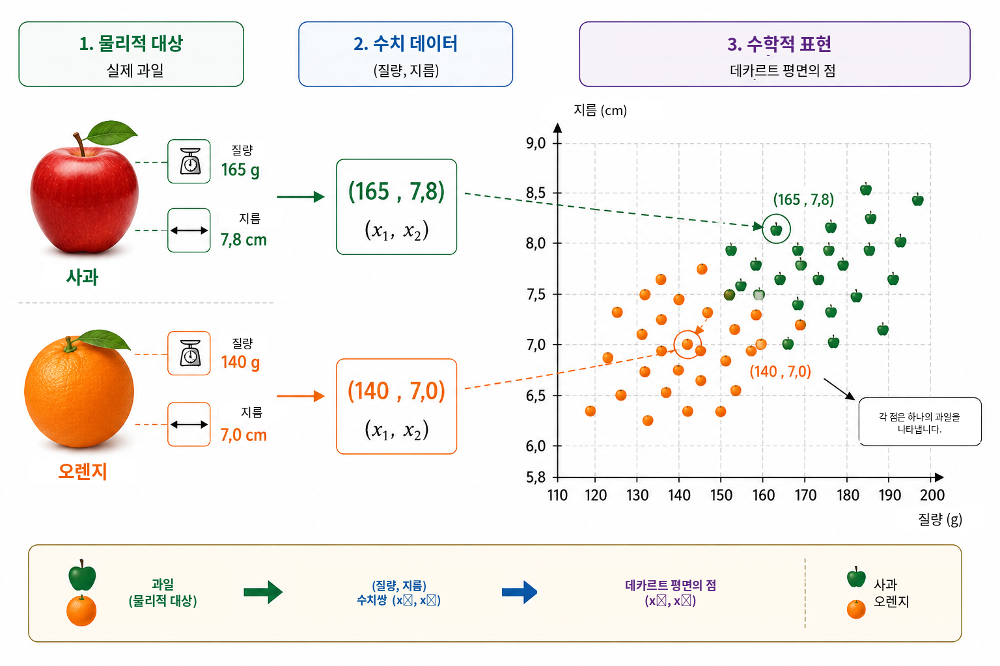
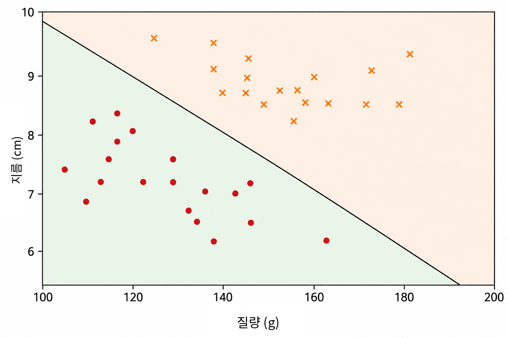
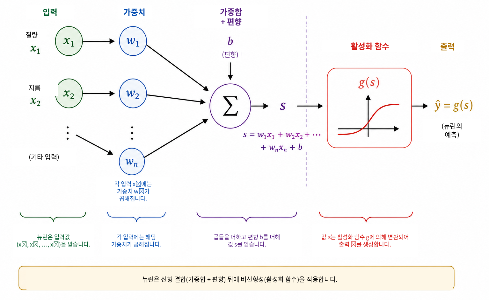
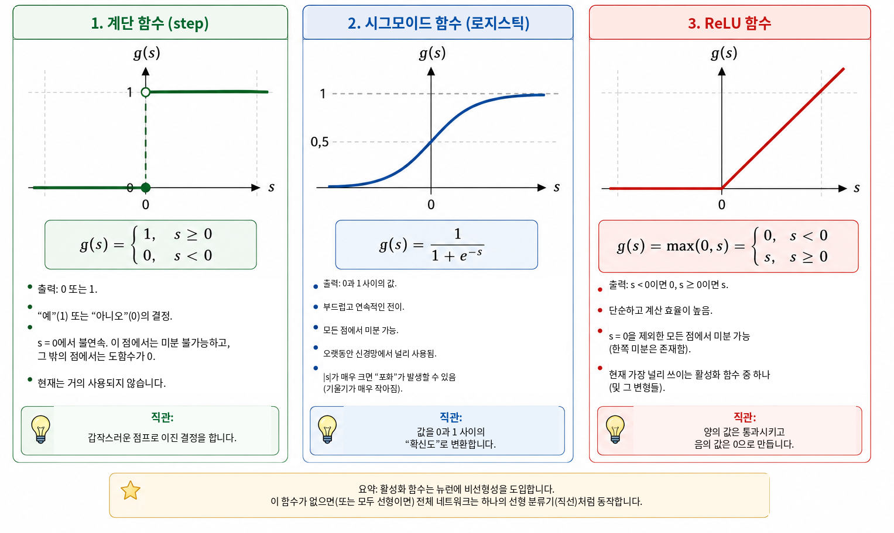
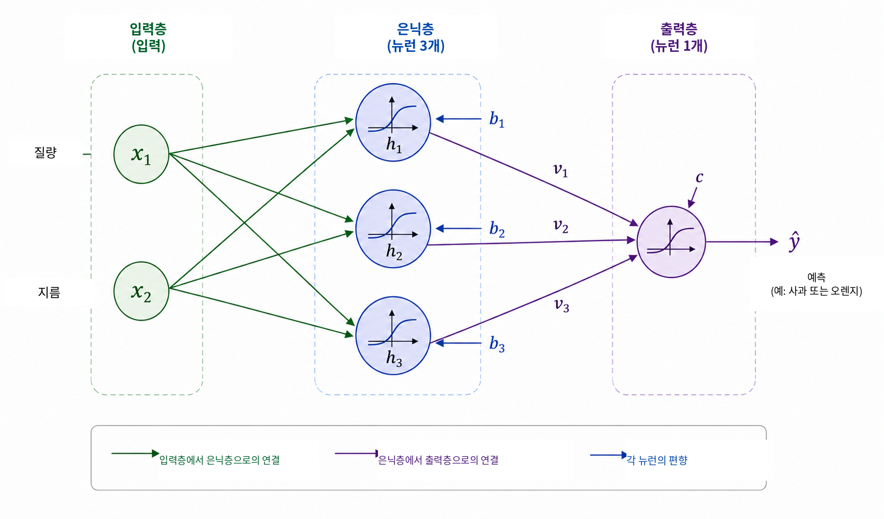
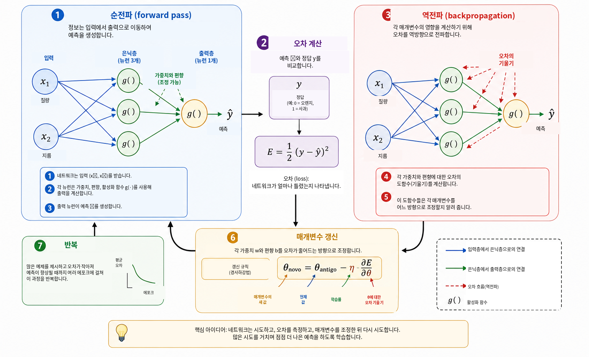
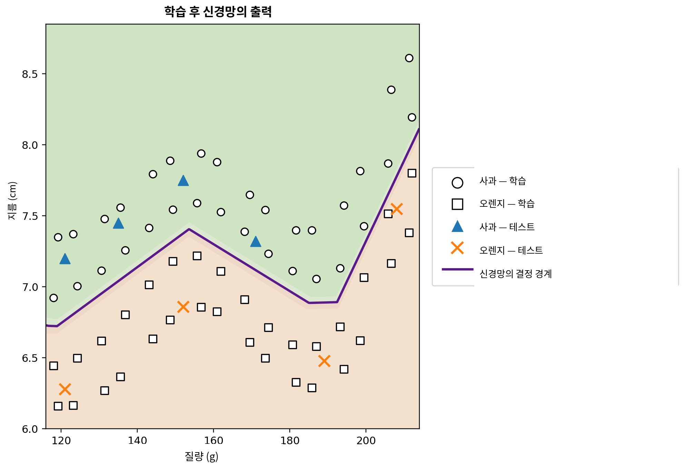

컴퓨터는 언제 학습할 수 있는가?
일상에서 우리는 거의 의식하지 않은 채 분류 판단을 내린다. 과일을 보면 사과인지 오렌지인지 빠르게 구별하고, 휴대전화에 메시지가 도착하면 정상적인 대화와 원치 않는 광고를 구분한다. 의료 분석에서는 여러 측정값을 결합하여 판단을 지원할 수 있고, 금융기관에서는 신용을 제공하기 전에 여러 정보를 평가한다. 이 모든 예에서는 여러 특성을 함께 고려하여 하나의 답을 만든다.
많은 전통적인 컴퓨터 프로그램에서는 이 답을 만들어 내는 규칙을 프로그래머가 명시적으로 작성한다. 규칙이 알려져 있고 명확히 표현할 수 있을 때는 잘 작동한다. 그러나 데이터의 변동성이 크거나 좋은 판단에 필요한 모든 조건을 미리 기술하기 어려울 때는 효과가 떨어진다. 따라서 다음과 같은 자연스러운 질문이 생긴다.
판단 규칙을 미리 주는 대신, 예제로부터 그 규칙을 학습하는 프로그램을 만들 수 있을까?
이는 데이터로부터 모델을 적합하는 방법을 다루는 인공지능의 한 분야인 기계학습의 핵심 아이디어 가운데 하나이다 . 지도학습 문제에서 알고리즘은 정답이 주어진 예제를 입력받고, 학습에 사용하지 않은 사례에도 유용한 예측을 할 수 있는 모델을 찾는다. 이를 위해 개발된 많은 모델 중 인공 신경망은 영상 인식, 언어 처리, 신호 분석, 시계열 예측 등의 응용에서 중요한 역할을 하고 있다 .
신경망을 수학, 계산, 학교 교육을 연결하는 주제로 활용하는 시도는 Batista와 Martins가 Professor de Matemática Online에서 이미 논의하였다 . 그들은 교사 교육, Python, 숫자 인식을 결합한 활동을 제시한다. 본 논문은 이를 보완하는 다른 경로를 따른다. 주요 목적은 작은 신경망 내부의 수학을 드러내고, 해석기하에서 시작하여 기울기 계산과 역전파의 직접 구현까지 단계적으로 진행하는 것이다.
현대의 응용은 매우 정교해 보이지만, 신경망의 수학적 핵심은 비교적 익숙한 개념으로 소개할 수 있다. 기본적으로 신경망은 데이터에 따라 매개변수가 조정되는 함수들의 합성이다. 먼저 단순한 기하학 문제에서 출발하여 분리 직선을 인공 뉴런으로 다시 해석하고, 여러 뉴런을 연결하고, 활성화 함수의 역할을 살펴보고, 도함수를 이용해 네트워크의 매개변수를 자동으로 조정하는 방법을 설명한다. 그런 다음 수식과 코드 사이의 직접적인 대응을 유지한 채 완전한 소규모 예제를 Python으로 구현한다.
문제를 수학적으로 표현하기
신경망의 작동 방식을 이해하기 위해 의도적으로 단순한 문제, 즉 사과와 오렌지를 구별하는 문제에서 시작한다. 과일에는 색, 질량, 지름, 질감, 향처럼 분류에 도움이 될 수 있는 많은 특성이 있다. 그러나 첫 번째 수학 모델에 이 모든 복잡성을 포함할 필요는 없다. 여기서는 쉽게 측정할 수 있는 두 양만 사용한다. 질량은 그램, 지름은 센티미터 단위로 측정한다.
따라서 각 과일을 순서쌍 \[(x_1,x_2),\] 으로 나타내고, \[x_1=\text{질량} \qquad\text{및}\qquad x_2=\text{지름}\] 로 둔다.
예를 들어 \((155,\;7.2)\)는 질량이 \(155\) g이고 지름이 \(7.2\) cm인 과일을 나타낸다. 물리적 대상을 두 개의 수치 측정값으로 바꾸면 각 과일을 데카르트 평면의 한 점과 대응시킬 수 있다. 첫 번째 좌표는 질량이고 두 번째 좌표는 지름이다. 그림 1는 가상의 사과와 오렌지 집합에 대해 이러한 표현을 보여 준다.

이 변환은 문제를 바라보는 방식을 바꾼다. 사과나 오렌지를 직접 어떻게 인식할 것인지 묻는 대신, 두 클래스에 속한 점들을 평면에서 어떻게 분리할 수 있는지를 묻는 기하학적 문제로 바꿀 수 있다. 이러한 관점의 전환은 기계학습에서 본질적이다. 이미지, 텍스트, 소리, 실험 신호는 모두 알고리즘이 처리하기 전에 수치 표현으로 변환되어야 한다. 이 예에서 각 대상은 두 좌표만 가지지만, 실제 응용의 표현은 수백, 수천, 심지어 수백만 개의 성분을 포함할 수 있다. 원리는 같다. 각 예제를 수의 집합과 대응시키고, 모델은 그 표현을 원하는 답으로 보내는 규칙을 찾는다.
먼저 가장 단순한 기하학적 규칙에서 시작하여, 하나의 직선만으로 사과 점들과 오렌지 점들을 충분히 분리할 수 있는지 살펴본다.
분류기로서의 직선
각 과일을 데카르트 평면의 점으로 나타내면 분류는 기하학 문제가 된다. 하나의 직선으로 사과와 오렌지를 나눌 수 있을까? 이 질문은 선형 분류기라고 불리는 중요한 기계학습 방법군의 기본 아이디어를 담고 있다.
그림 2처럼 데이터 점 구름을 가로지르는 직선을 생각하자. 이 직선은 평면을 두 반평면으로 나눈다. 사과 점의 대부분이 한쪽에 있고 오렌지 점의 대부분이 다른 쪽에 있다면, 새로운 과일이 직선의 어느 쪽에 있는지를 분류 규칙으로 사용할 수 있다. 질량과 지름을 측정하고 과일을 점으로 나타낸 뒤, 그 점이 어느 반평면에 있는지를 확인하면 된다.

데카르트 평면 \((x_1,x_2)\)에서 직선은 \[w_1x_1+w_2x_2+b=0, \qquad (w_1,w_2)\neq(0,0)\] 로 쓸 수 있다.
벡터 \((w_1,w_2)\)는 직선에 수직이며 그 방향을 결정한다. 한편 매개변수 \(b\)는 직선의 위치에 관여한다. 이 표현에는 약간의 중복성이 있다. \(w_1,w_2,b\)를 같은 0이 아닌 상수로 곱해도 같은 직선이 된다. 따라서 경계를 기술하는 매개변수는 유일하지 않다. 또한 수치적 해석은 변수의 척도에도 의존한다. 질량은 그램, 지름은 센티미터로 측정되므로 단위 차이를 고려하지 않고 \(w_1\)과 \(w_2\)의 수치 크기를 직접 비교해서는 안 된다.
직선의 방정식 자체를 이용하면 점이 경계의 어느 쪽에 있는지 쉽게 판정할 수 있다. 점수를 \[s(x_1,x_2)=w_1x_1+w_2x_2+b\] 로 정의하자.
\(s(x_1,x_2)=0\)이면 점은 직선 위에 있다. \(s(x_1,x_2)>0\)이면 한 반평면에 있고, \(s(x_1,x_2)<0\)이면 다른 반평면에 있다. 양의 점수를 사과, 음의 점수를 오렌지에 대응시키면 규칙은 \[\begin{cases} s(x_1,x_2)\geq 0 & \Longrightarrow \text{사과},\\ s(x_1,x_2)<0 & \Longrightarrow \text{오렌지} \end{cases}\] 가 된다.
예를 들어 경계가 \[w_1=\frac{1}{10}, \qquad w_2=2, \qquad b=-30\] 로 정해졌다고 하자. 질량 \(160\) g, 지름 \(7.8\) cm인 과일에 대해 \[\begin{aligned} s &=\frac{1}{10}\times160+2\times7.8-30\\ &=16+15.6-30\\ &=1.6 \end{aligned}\] 이다. 점수가 양수이므로 이 점은 사과에 대응시킨 반평면에 있다. 따라서 이 분류기는 이 과일을 사과로 판정한다.
\(w_1,w_2,b\)를 어떻게 선택하든 좋은 분류가 되는 것은 아니다. 두 집단을 잘 분리하지 못하는 직선도 있고 오류가 적은 직선도 있다. 학습 문제란 라벨이 알려진 예제를 사용하여 모델의 오차를 나타내는 양을 작게 만드는 매개변수 값을 찾는 것이다. 직선의 위치를 직접 프로그래밍하는 대신, 알고리즘이 데이터로부터 계수를 조정하도록 하고자 한다.
클래스가 대략 선형 분리 가능하다면 하나의 직선만으로도 충분히 잘 작동할 수 있다. 그러나 더 복잡한 데이터 집합에는 비선형 경계가 필요하다. 그 한계를 다루기 전에, 방금 만든 분류기를 기본 계산 단위인 인공 뉴런으로 다시 해석해 보자.
인공 뉴런
앞 절에서는 \[s=w_1x_1+w_2x_2+b\] 라는 식을 이용해 과일이 직선의 어느 쪽에 있는지를 결정했다. 같은 식은 인공 뉴런이 수행하는 계산의 첫 단계로 볼 수 있다. 뉴런은 수치 입력을 받아 가중치와 편향으로 결합한 뒤, 수학적 함수를 적용하여 출력을 얻는다.
이 예에서 입력은 질량 \(x_1\)과 지름 \(x_2\)이다. 각 입력에는 가중치라는 매개변수가 곱해지고, 그 곱들을 편향이라는 상수항 \(b\)와 함께 더한다. 그림 3은 이 계산을 도식적으로 보여 준다.

가중치는 입력의 변화가 점수에 어떤 영향을 주는지를 결정한다. \(x_2\)와 다른 모든 양을 고정하면 \(x_1\)의 변화 \(\Delta x_1\)은 \(s\)를 \(w_1\Delta x_1\)만큼 변화시킨다. 마찬가지로 \(x_2\)의 변화 \(\Delta x_2\)는 점수를 \(w_2\Delta x_2\)만큼 바꾼다. 부호도 중요하다. 양의 가중치에서는 입력이 증가하면 점수도 증가하고, 음의 가중치에서는 반대 효과가 난다. 다만 서로 다른 변수가 다른 단위나 척도를 가지면 이 해석에는 주의가 필요하다. 그래서 실제 구현에서는 학습 전에 입력 데이터를 정규화하거나 표준화하는 경우가 많다.
편향 \(b\)는 아핀 변환의 상수항이다. 기하학적으로는 결정 경계를 평행 이동시키는 역할을 한다. \(b=0\)이면 \[w_1x_1+w_2x_2=0\] 라는 식 때문에 직선은 원점을 지나야 한다. 편향이 있으면 경계를 다른 위치로 옮길 수 있다. 다시 말해 \(x_1=x_2=0\)일 때 점수는 단순히 \(s=b\)이다.
점수가 반드시 뉴런의 최종 출력인 것은 아니다. 일반적으로 활성화 함수 \(g\)를 적용한다. \[\widehat{y}=g(s)=g\left(w_1x_1+w_2x_2+b\right).\] 따라서 계산은 두 단계로 이루어진다. \[\begin{aligned} s &= w_1x_1+w_2x_2+b,\\[4pt] \widehat{y} &= g(s). \end{aligned}\]
앞 절의 매개변수 값을 사용하면 \(s=1.6\)이다. 계단 함수 \[g(s)= \begin{cases} 1, & s\geq0,\\ 0, & s<0 \end{cases}\] 를 선택하면 \(\widehat{y}=g(1.6)=1\)이 된다. 여기서 채택한 규칙에 따르면 이 과일은 사과로 분류된다. 이 활성화 함수에서는 \(s\)가 0을 지날 때 판단이 바뀌므로 클래스 경계는 정확히 \[w_1x_1+w_2x_2+b=0\] 이다.
따라서 하나의 뉴런은 조정 가능한 매개변수를 가진 단순한 수학적 대상이다. 진정한 중요성은 많은 뉴런을 연결할 때 나타난다. 그러나 네트워크를 구성하기 전에 활성화 함수가 왜 필수적인지 이해할 필요가 있다.
왜 활성화 함수가 필요한가?
뉴런은 먼저 아핀 변환으로 점수를 계산한 다음 활성화 함수를 적용한다. 이 두 번째 단계는 신경망이 복잡한 관계를 표현하는 데 필수적이다. 이유를 보기 위해 활성화 함수를 전혀 사용하지 않는 네트워크를 생각하자. 그러면 모든 유닛은 \[y=w_1x_1+w_2x_2+b\] 형태가 된다.
1차원 예로 첫 번째 유닛이 \[h=ax+b\] 를 출력하고 두 번째 유닛이 \[y=ch+d\] 를 계산한다고 하자. 대입하면 \[y=c(ax+b)+d=acx+(cb+d)\] 가 되며, 여전히 \(x\)의 아핀 함수이다. 다차원에서도 마찬가지로 아핀 변환을 아무리 많이 합성해도 결과는 아핀 변환이다. 따라서 비선형 연산 없이 층을 늘려도 네트워크의 표현력은 본질적으로 증가하지 않으며, 전체 합성을 하나의 아핀 변환으로 대체할 수 있다.
활성화 함수는 이 제약을 깨뜨린다. 점수 \(s\)를 계산한 뒤 뉴런은 보통 비선형 사상 \[h=g(s)\] 을 적용한다. 이런 유닛을 여러 개 연결하면 결과 합성은 더 이상 하나의 아핀 변환으로 축약되지 않는다. 그 결과 네트워크는 더 복잡한 결정 경계를 만들 수 있다.
가장 단순한 활성화 함수는 계단 함수 \[g(s)= \begin{cases} 1, & s\geq0,\\ 0, & s<0 \end{cases}\] 이다. 이는 이진 판단을 제공하므로 분류의 개념을 이해하는 데 매우 유용하다. 그러나 도함수는 \(s\neq0\)에서 \(0\)이고, \(s=0\)에서는 정의되지 않는다. 경사 기반 학습에서는 매개변수를 어떻게 바꿀지 결정하기 위해 도함수를 사용하므로 계단 함수는 그 학습 메커니즘에 적합하지 않다.
한 가지 대안은 시그모이드 함수 \[\sigma(s)=\frac{1}{1+e^{-s}}\] 이다. 이 함수는 모든 실수를 \(0\)과 \(1\) 사이의 값으로 보낸다. \(s\)가 매우 음수이면 출력은 \(0\)에 가까워지고, 매우 양수이면 \(1\)에 가까워진다. 그 사이에서는 부드럽게 변한다. 시그모이드 함수는 모든 점에서 미분 가능하며 \[\sigma'(s)=\sigma(s)\bigl(1-\sigma(s)\bigr)\] 를 만족한다. 출력이 \(0\)과 \(1\) 사이이므로 이진 분류기의 출력층에서 자주 사용된다. 적절한 손실 함수를 사용하는 확률적 정식화에서는 출력을 “클래스 \(1\)일 확률”의 추정치로 해석할 수 있다. 다만 은닉층에서 시그모이드를 사용하면 입력의 절댓값이 큰 영역에서 도함수가 매우 작아져 깊은 네트워크에서 기울기 소실의 한 원인이 될 수 있다.
은닉층에서 널리 사용되는 활성화 함수가 ReLU(Rectified Linear Unit)이다. \[\mathrm{ReLU}(s)=\mathrm{max}(0,s) = \begin{cases} 0, & s<0,\\ s, & s\geq0. \end{cases}\] ReLU는 두 개의 선형 부분으로 이루어지지만 전체적으로는 선형이 아니다. 도함수는 \(s<0\)에서 \(0\), \(s>0\)에서 \(1\)이다. \(s=0\)에서는 보통의 도함수가 존재하지 않으므로 소프트웨어 구현에서는 기울기에 대해 어떤 약속을 정한다. 양의 입력에서는 \(s\)가 커져도 도함수가 작아지지 않으므로 시그모이드에서 나타나는 포화 문제의 한 형태를 피할 수 있다.
그림 4은 이 세 활성화 함수를 시각적으로 비교한다. 계단 함수의 급격한 점프, 시그모이드의 부드러운 전이, ReLU의 기울기 변화를 확인할 수 있다.

주요 성질을 다음 표에 요약한다.
| 함수 | 출력 | 도함수 | 대표적 용도 |
|---|---|---|---|
| 계단 | \(\{0,1\}\) | \(s\neq0\)에서 \(0\), \(s=0\)에서 정의되지 않음 | 역사적 모델, 교육용 예제 |
| 시그모이드 | \((0,1)\) | 모든 \(s\)에서 존재 | 이진 분류의 출력층 |
| ReLU | \([0,\infty)\) | \(s<0\)에서 \(0\), \(s>0\)에서 \(1\) | 은닉층 |
이 함수들은 세부적으로 다르지만 공통된 개념적 역할은 비선형성을 도입하는 것이다. 이 비선형성 덕분에 다음 절의 작은 네트워크는 하나의 직선으로 표현할 수 없는 관계를 나타낼 수 있다.
더 공부하고 싶은 독자에게 Haykin 은 신경망에 대한 고전적인 설명을 제공하고, Goodfellow, Bengio, Courville 은 활성화 함수와 심층 네트워크 학습을 더 넓은 맥락에서 다룬다. Nielsen의 무료 공개 교재 는 뉴런, 활성화 함수, 학습에 대한 직관을 기르는 데 특히 읽기 쉽다.
작은 신경망 구성하기
여기서는 두 개의 입력, 세 개의 뉴런을 가진 하나의 은닉층, 그리고 하나의 출력 뉴런으로 이루어진 네트워크를 생각한다. 입력은 계속해서 \[x_1=\text{질량}, \qquad x_2=\text{지름}\] 이며, 그림 5과 같이 두 입력 모두 각 은닉 뉴런으로 전달된다.

은닉층의 출력을 \(h_1,h_2,h_3\)라 하자. 각 뉴런은 같은 두 입력을 받지만 고유한 가중치와 편향을 가진다. \[\begin{aligned} h_1&=g\left(w_{11}x_1+w_{12}x_2+b_1\right),\\[4pt] h_2&=g\left(w_{21}x_1+w_{22}x_2+b_2\right),\\[4pt] h_3&=g\left(w_{31}x_1+w_{32}x_2+b_3\right). \end{aligned}\]
세 뉴런은 모두 같은 질량과 지름을 입력받지만 매개변수가 다르므로 서로 다른 응답을 만들 수 있다. 학습에서는 이러한 매개변수를 조정하여 중간 활성값이 분류에 유용하도록 한다.
다음으로 \(h_1,h_2,h_3\)를 출력 뉴런으로 보낸다. 출력 뉴런은 \[s_{\mathrm{out}}=v_1h_1+v_2h_2+v_3h_3+c\] 를 계산하고, \[\widehat{y}=g_{\mathrm{out}}\left(s_{\mathrm{out}}\right)\] 를 출력한다. 이 이진 분류 문제에서는 출력에 시그모이드 함수를 사용한다. \[\widehat{y}=\sigma\left(v_1h_1+v_2h_2+v_3h_3+c\right), \qquad 0<\widehat{y}<1.\]
사과를 \(y=1\), 오렌지를 \(y=0\)으로 두고 임계값을 \(0.5\)로 정하면 클래스 판정은 \[\widehat{y}\geq0.5 \Longrightarrow \text{사과}, \qquad \widehat{y}<0.5 \Longrightarrow \text{오렌지}\] 가 된다. 따라서 \(1\)에 가까운 값은 사과와 강하게 대응하고, \(0\)에 가까운 값은 오렌지와 대응한다. 앞서 언급했듯이 \(\widehat{y}\)를 수치적으로 확률로 해석하려면 모델과 학습 방법에 관한 추가 가정이 필요하다. 여기서 사용하는 분류 규칙에서는 \(\widehat{y}\)를 연속값 네트워크 출력으로 보면 충분하다.
이 구조의 핵심 특징은 중간 표현 \[(x_1,x_2) \longrightarrow (h_1,h_2,h_3) \longrightarrow \widehat{y}\] 에 있다. 네트워크는 두 특징을 입력받아 최종 답을 내기 전에 세 개의 새로운 양을 구성한다. 이 활성값들은 사람이 손으로 선택하는 것이 아니다. 가중치와 편향에 의존하므로 학습을 통해 매개변수가 바뀌면 활성값도 변한다.
이 네트워크는 작지만 이미 13개의 조정 가능한 매개변수를 가진다. 세 은닉 뉴런에는 \[3(2+1)=9\] 개의 매개변수가 있고, 출력 뉴런에는 \[3+1=4\] 개가 있다. 따라서 \[9+4=13\] 이다.
같은 계산은 행렬 표기로 쓰면 더 분명해진다. \[\mathbf{x}= \begin{bmatrix} x_1\\x_2 \end{bmatrix}, \qquad W^{(1)}= \begin{bmatrix} w_{11}&w_{12}\\ w_{21}&w_{22}\\ w_{31}&w_{32} \end{bmatrix}, \qquad \mathbf{b}^{(1)}= \begin{bmatrix} b_1\\b_2\\b_3 \end{bmatrix}.\] 그러면 은닉층은 간단히 \[\mathbf{h}=g\left(W^{(1)}\mathbf{x}+\mathbf{b}^{(1)}\right)\] 로 쓸 수 있다. 여기서 \(g\)는 성분별로 작용한다. 출력은 \[\widehat{y} = \sigma\left(W^{(2)}\mathbf{h}+b^{(2)}\right),\] 이며, 여기서 \[W^{(2)}= \begin{bmatrix} v_1&v_2&v_3 \end{bmatrix}\] 이다.
이 표기는 뒤의 Python 프로그램에 나타날 구조를 미리 보여 준다. 과일을 입력하고 \(\widehat{y}\)를 얻을 때까지 활성값을 차례로 계산하는 과정을 순전파(forward propagation) 또는 forward pass라고 한다. 남은 핵심 질문은 예측이 데이터에 맞도록 13개의 매개변수를 어떻게 자동으로 결정할 것인가이다.
신경망은 어떻게 학습하는가?
가중치와 편향은 미리 알 수 없다. 정답이 알려진 예제를 사용해 조정해야 한다. 이 과정을 학습이라 하며 다음 순환으로 요약할 수 있다. \[\boxed{\text{예측}} \longrightarrow \boxed{\text{오차 측정}} \longrightarrow \boxed{\text{매개변수 조정}} \longrightarrow \boxed{\text{반복}}.\]
질량 \(140\) g, 지름 \(7.0\) cm인 과일을 생각하고 정답 클래스가 오렌지, 즉 \(y=0\)이라고 하자. 학습의 어느 시점에서 네트워크가 \(\widehat{y}=0.80\)을 출력했다고 하자. 예측과 목표값의 차이를 측정하는 간단한 방법 중 하나는 제곱오차 \[E=\frac{1}{2}\left(y-\widehat{y}\right)^2\] 이다. 이 예에서는 \[E=\frac{1}{2}(0-0.80)^2=0.32\] 가 된다.
이 식은 하나의 예제에 대한 손실 함수이다. 제곱이므로 \(E\geq0\)이고 목표값에서 멀리 떨어진 예측일수록 더 큰 벌점을 받는다. 계수 \(1/2\)는 최솟값의 위치를 바꾸지 않지만 미분을 간단하게 한다. 이진 분류에서는 특히 교차엔트로피와 같은 다른 손실도 자주 사용한다. 여기서는 대수가 투명하고 최적화와 역전파를 소개하기에 충분하므로 제곱오차를 사용한다 .
학습 데이터가 \(N\)개의 예제를 포함한다면 전체 척도로 평균 손실 \[J=\frac{1}{N}\sum_{i=1}^{N}E_i\] 을 사용할 수 있다. 각 예측은 네트워크의 가중치와 편향에 의존하므로 \(J\)도 모든 매개변수에 의존한다. 학습은 \(J\)를 작게 하는 매개변수 값을 찾는 과정이다.
조정 메커니즘을 이해하기 위해 먼저 하나의 가중치 \(w\)를 제외한 모든 매개변수를 고정해 보자. 그러면 손실을 \(J=J(w)\)라는 한 변수 함수로 볼 수 있다. 그림 6은 앞으로 설명할 학습의 기본 단계를 요약한다.

미적분에 익숙하지 않은 독자는 여기서 도함수를 국소 민감도의 척도로 생각할 수 있다. 어떤 매개변수를 조금 바꾸었을 때 손실이 어떻게 변하는 경향이 있는지를 나타낸다. 부호는 어느 방향으로 움직일 때 함수가 국소적으로 증가하거나 감소하는지를 보여 주고, 크기는 그 국소 변화의 강도를 나타낸다.
도함수 \[\frac{\partial J}{\partial w}\] 는 국소 기울기를 준다. 이것이 양수이면 \(w\)를 조금 늘릴 때 \(J\)도 증가하는 경향이 있으므로 가중치를 반대 방향으로 움직여야 한다. 음수이면 \(w\)를 늘릴 때 국소적으로 \(J\)가 감소하는 경향이 있다. 두 경우는 \[w_{\mathrm{new}} = w_{\mathrm{old}} - \eta\frac{\partial J}{\partial w}\] 로 함께 쓸 수 있다. 이것이 경사하강법의 기본 아이디어이다. 양수 \(\eta\)를 학습률이라 하며 업데이트 크기를 제어한다. 너무 작으면 학습이 느리고, 너무 크면 진동이나 불안정성이 생길 수 있다.
매개변수가 많은 네트워크에서는 임의의 가중치 또는 편향을 \(\theta\)라고 쓰면 업데이트는 \[\theta_{\mathrm{new}} = \theta_{\mathrm{old}} - \eta\frac{\partial J}{\partial\theta}\] 가 된다. 모든 편미분을 모은 것이 손실의 기울기이다. 기하학적으로 기울기는 국소적으로 가장 빠르게 증가하는 방향을 가리키므로, 음의 기울기는 국소적인 감소 방향을 준다.
이제 네트워크가 여러 함수의 합성일 때 이러한 도함수를 계산해야 한다. 순전파에서는 정보가 \[\text{입력} \longrightarrow \text{은닉층} \longrightarrow \text{출력}\] 방향으로 이동한다. 초기 층의 매개변수가 손실에 어떤 영향을 주는지 구하려면 의존 관계의 사슬을 수학적으로 거꾸로 따라가야 한다. 이 절차가 역전파(backpropagation)이며, 본질적으로 연쇄법칙을 체계적이고 효율적으로 적용하는 방법이다. Rumelhart, Hinton, Williams 는 은닉층이 있는 네트워크에서 이 방법을 널리 알린 고전적 문헌이고, Nielsen 은 자세하고 교육적인 유도를 제공한다.
단순한 의존 관계로 \(E\)가 \(\widehat{y}\)에 의존하고, \(\widehat{y}\)가 활성값 \(h\)에 의존하며, 다시 \(h\)가 가중치 \(w\)에 의존한다고 하자. 그러면 연쇄법칙에 의해 \[\frac{\partial E}{\partial w} = \frac{\partial E}{\partial\widehat{y}} \, \frac{\partial\widehat{y}}{\partial h} \, \frac{\partial h}{\partial w}\] 를 얻는다. 각 인자는 \(w\)가 최종 손실에 영향을 미치는 과정의 한 단계를 나타낸다. 더 큰 네트워크에는 이런 사슬이 많이 존재하며, 역전파는 중간 도함수를 재사용하여 각 매개변수마다 따로 다시 계산하는 일을 피한다.
실제 학습에서는 많은 예제를 사용한다. 학습 집합 전체를 한 번 통과하는 것을 하나의 에포크라고 한다. 뒤에서 제시할 교육용 프로그램처럼 각 예제 뒤에 매개변수를 갱신할 수도 있고, 대규모 네트워크에서 흔한 것처럼 미니배치라고 하는 작은 예제 묶음마다 갱신할 수도 있다. 어느 경우든 예측, 손실, 기울기, 업데이트의 순환을 많은 에포크 동안 반복한다.
이 변화를 구체적으로 보는 한 방법은 하나의 고정된 예제에 대한 예측이 학습 단계별로 어떻게 달라지는지 추적하는 것이다. 다시 질량 \(140\) g, 지름 \(7.0\) cm이고 정답 클래스가 오렌지인 과일을 생각하자. 표 1은 가상의 변화를 보여 준다. 이 값들은 특정 실행 결과가 아니라 메커니즘을 설명하기 위한 예일 뿐이다.
| 에포크 | 예측 \(\widehat{y}\) | 손실 \(E\) | 분류 |
|---|---|---|---|
| 1 | 0.86 | 0.37 | 사과 |
| 5 | 0.71 | 0.25 | 사과 |
| 10 | 0.55 | 0.15 | 사과 |
| 20 | 0.31 | 0.05 | 오렌지 |
| 40 | 0.09 | 0.004 | 오렌지 |
학습 초기에는 출력이 \(1\)에 가까워 과일을 잘못 사과로 분류한다. 매개변수가 조정되면서 예측값이 낮아지고, 마침내 임계값 \(0.5\)를 넘어 올바른 클래스가 된다. 이 과정에서 변하는 것은 가중치와 편향의 수치이며 네트워크 구조 자체는 고정되어 있다.
학습 데이터에서 손실을 줄이는 것 자체가 최종 목적은 아니다. 유용한 네트워크는 매개변수 조정에 사용하지 않은 예제에도 좋은 예측을 해야 한다. 이 능력을 일반화라고 한다. 모델이 학습 집합의 세부 특징에 지나치게 맞춰져 새 데이터에서 성능이 나빠지는 현상을 과적합이라고 한다. 더 신중한 평가에서는 데이터를 학습 집합, 검증 집합, 테스트 집합으로 나누는 경우가 많다. 학습 집합은 매개변수 추정에, 검증 집합은 모델 개발 중의 선택에, 테스트 집합은 최종 평가에 사용한다. 일반화와 모델 평가에 대해서는 Faceli 등 과 Goodfellow, Bengio, Courville 에 더 자세한 논의가 있다.
이제 신경망에서 “학습”의 수학적 의미에 도달했다. 이 맥락에서 학습이란 데이터의 오차 척도를 줄이고, 이상적으로는 새로운 예제에도 일반화할 수 있도록 합성 함수의 매개변수를 조정하는 것이다. 네트워크는 예측하고, 손실을 계산하고, 도함수를 통해 각 매개변수가 손실에 어떻게 영향을 주는지 구하고, 작은 수정을 반복한다.
수학에서 Python으로
이제 수식을 실행 가능한 프로그램으로 옮긴다. 목적은 전용 신경망 라이브러리를 사용하는 것이 아니라, 본 논문에서 전개한 수학 연산을 NumPy로 직접 구현하는 것이다 . 이를 통해 선형 결합, 활성화 함수, 손실 계산, 역전파, 경사하강법이 코드에 어떻게 나타나는지 한 줄씩 확인할 수 있다.
더 설득력 있는 최종 예제를 위해 질량–지름 평면의 더 넓은 영역에 분포한 합성 데이터 집합을 사용한다. 물리적 특성은 여전히 그램 단위의 질량과 센티미터 단위의 지름 두 가지뿐이지만, 이번에는 64개의 학습 예제를 평면의 넓은 영역에 배치하고, 추가로 8개의 예제를 설명용 테스트로 남겨 둔다. 데이터는 합성이지만 사과와 오렌지로서 비현실적이지 않은 범위에 유지한다. 또한 모든 점이 소수의 인공적인 군집에 몰리지 않으면서 비선형 결정 경계가 생기도록 구성한다.
기하학적 아이디어는 단순하다. 질량–지름 평면에 기준 곡선을 정하고, 그 곡선 위쪽에 두 개의 띠 모양 영역으로 사과를, 아래쪽에 두 개의 띠 모양 영역으로 오렌지를 배치한다. 질량과 지름 모두에 작은 결정론적 섭동을 추가하여 관측점이 더 넓은 영역에 퍼지도록 한다. 그 결과 앞의 그림보다 풍부한 예제가 얻어진다. 점이 더 많고 영역 전체에 분포하며, 적절한 결정 경계도 직선보다 뚜렷하게 굽은 형태가 된다.
이 마지막 계산 실험에서는 은닉층을 12개의 ReLU 뉴런으로 확장한다. 이는 앞 절에서 배운 개념적 구조를 바꾸지 않고 더 복잡한 경계를 표현하는 네트워크의 능력을 키울 뿐이다. 세 뉴런의 교육용 네트워크가 13개의 매개변수를 가진 데 비해, 여기서는 49개의 조정 가능한 매개변수를 가진다. 첫 번째 층에 24개의 가중치와 12개의 편향, 출력층에 12개의 가중치와 1개의 편향이 있다. 방정식의 형태는 완전히 같고 벡터와 행렬만 더 커진다.
전체 프로그램은 다음과 같다.
import numpy as np
import matplotlib.pyplot as plt
from matplotlib.lines import Line2D
plt.rcParams["font.family"] = "Noto Sans CJK KR"
def relu(s):
return np.maximum(0, s)
def relu_derivative(s):
return (s > 0).astype(float)
def sigmoid(s):
return 1 / (1 + np.exp(-s))
def base_boundary(m):
return 6.68 + 0.74*np.exp(-((m-155)/20)**2) \
+ 1.50/(1 + np.exp(-(m-202)/5))
def build_data():
masses_1 = np.linspace(118, 212, 16)
masses_2 = masses_1 + np.array([
1.2,-1.1,0.8,-1.3,1.0,-0.8,1.1,-1.0,
1.3,-0.9,0.9,-1.2,1.0,-1.0,0.8,-0.7
])
k = np.arange(16)
a1 = np.column_stack([
masses_1,
base_boundary(masses_1) + 0.22 + 0.05*np.sin(0.8*k)
])
a2 = np.column_stack([
masses_2,
base_boundary(masses_2) + 0.58 + 0.06*np.cos(0.45*k)
])
o1 = np.column_stack([
masses_1,
base_boundary(masses_1) - (0.22 + 0.04*np.cos(0.7*k))
])
o2 = np.column_stack([
masses_2,
base_boundary(masses_2) - (0.55 + 0.05*np.sin(0.5*k))
])
X_train = np.vstack([a1, a2, o1, o2])
y_train = np.array([1.0]*32 + [0.0]*32)
X_test = np.array([
[121.0, 7.20], [135.0, 7.45],
[152.0, 7.75], [171.0, 7.32],
[121.0, 6.28], [152.0, 6.86],
[189.0, 6.48], [208.0, 7.55]
])
y_test = np.array([1,1,1,1,0,0,0,0], dtype=float)
return X_train, y_train, X_test, y_test
def predict(X, mean, std, W1, b1, W2, b2):
Xn = (X - mean) / std
outputs = []
for x in Xn:
h = relu(W1 @ x + b1)
y_hat = sigmoid(W2 @ h + b2)
outputs.append(y_hat)
return np.array(outputs)
X_train, y_train, X_test, y_test = build_data()
mean = X_train.mean(axis=0)
std = X_train.std(axis=0)
Xn = (X_train - mean) / std
rng = np.random.default_rng(42)
W1 = 0.1 * rng.standard_normal((12, 2))
b1 = np.zeros(12)
W2 = 0.1 * rng.standard_normal(12)
b2 = 0.0
eta = 0.05
n_epochs = 6000
history = []
for epoch in range(n_epochs):
for i in rng.permutation(len(Xn)):
x = Xn[i]
target = y_train[i]
z1 = W1 @ x + b1
h = relu(z1)
z2 = W2 @ h + b2
y_hat = sigmoid(z2)
delta2 = (y_hat - target) * y_hat * (1 - y_hat)
dW2 = delta2 * h
db2 = delta2
delta1 = (delta2 * W2) * relu_derivative(z1)
dW1 = np.outer(delta1, x)
db1 = delta1
W1 -= eta * dW1
b1 -= eta * db1
W2 -= eta * dW2
b2 -= eta * db2
errors = []
for x, target in zip(Xn, y_train):
h = relu(W1 @ x + b1)
y_hat = sigmoid(W2 @ h + b2)
errors.append(0.5 * (target - y_hat)**2)
history.append(np.mean(errors))
def make_figure():
masses = np.linspace(116, 214, 500)
diameters = np.linspace(6.0, 8.85, 500)
M, D = np.meshgrid(masses, diameters)
grid = np.column_stack([M.ravel(), D.ravel()])
P = predict(grid, mean, std, W1, b1, W2, b2).reshape(M.shape)
fig, ax = plt.subplots(figsize=(9.2, 6.3))
ax.contourf(
M, D, P,
levels=[0.0, 0.25, 0.50, 0.75, 1.0],
colors=["#f3e0cb", "#ecd5c4", "#dbe7cf", "#cde3bf"],
alpha=0.95
)
ax.contour(M, D, P, levels=[0.5],
colors=["#5a1a8a"], linewidths=2.2)
mask = y_train == 1.0
ax.scatter(X_train[mask,0], X_train[mask,1], marker="o",
s=48, facecolors="white", edgecolors="black",
linewidths=1.1, label="사과 - 학습")
mask = y_train == 0.0
ax.scatter(X_train[mask,0], X_train[mask,1], marker="s",
s=48, facecolors="white", edgecolors="black",
linewidths=1.1, label="오렌지 - 학습")
mask = y_test == 1.0
ax.scatter(X_test[mask,0], X_test[mask,1], marker="^",
s=92, color="#1f77b4", label="사과 - 테스트")
mask = y_test == 0.0
ax.scatter(X_test[mask,0], X_test[mask,1], marker="x",
s=110, color="#ff7f0e", linewidths=2.0,
label="오렌지 - 테스트")
ax.set_xlabel("질량 (g)")
ax.set_ylabel("지름 (cm)")
ax.set_title("학습 후 신경망의 출력")
handles = [
Line2D([0],[0], marker='o', markersize=9,
markerfacecolor='white', markeredgecolor='black',
linestyle='None', label='사과 - 학습'),
Line2D([0],[0], marker='s', markersize=9,
markerfacecolor='white', markeredgecolor='black',
linestyle='None', label='오렌지 - 학습'),
Line2D([0],[0], marker='^', markersize=9, color='#1f77b4',
linestyle='None', label='사과 - 테스트'),
Line2D([0],[0], marker='x', markersize=10, color='#ff7f0e',
linestyle='None', label='오렌지 - 테스트'),
Line2D([0],[0], color='#5a1a8a', lw=2.2,
label='신경망의 결정 경계')
]
ax.legend(handles=handles, loc='center left',
bbox_to_anchor=(1.02, 0.5), frameon=True)
fig.tight_layout()
plt.show()코드는 본 논문에서 처음 다룬 방정식보다 길지만 구조는 여전히 명확하다. 함수 build_data()는 64개의 학습 예제와 8개의 설명용 테스트 예제를 자동으로 생성한다. 이어서 두 변수를 \[x_j^{\ast}=\frac{x_j-\mu_j}{\sigma_j}\] 로 표준화한다. 여기서 \(\mu_j\)와 \(\sigma_j\)는 학습 집합만으로 계산한다. 이렇게 하면 테스트 집합이 매개변수 추정에 영향을 주는 것을 막고, 동시에 질량과 지름을 비교 가능한 수치 척도로 맞춘다.
순전파의 본질은 변하지 않는다. 차이는 첫 번째 층이 12개의 은닉 활성값으로 이루어진 벡터를 출력한다는 점뿐이다. 행렬 표기로는 \[\mathbf{z}^{(1)}=W^{(1)}\mathbf{x}+\mathbf{b}^{(1)}, \qquad \mathbf{h}=\mathrm{ReLU}(\mathbf{z}^{(1)}),\] \[z^{(2)}=W^{(2)}\mathbf{h}+b^{(2)}, \qquad \widehat{y}=\sigma(z^{(2)}).\] 이 네 식에는 알고리즘의 수학적 핵심이 그대로 담겨 있다. 학습도 앞에서 소개한 논리를 그대로 유지한다. 즉 예측을 계산하고, 오차를 측정하고, 도함수로 민감도 정보를 역방향으로 전파하고, 경사하강법의 작은 업데이트로 매개변수를 수정한다.
코드에서 출력층의 역전파는
delta2 = (y_hat - target) * y_hat * (1 - y_hat)에 나타나고, 은닉층으로의 전파는
delta1 = (delta2 * W2) * relu_derivative(z1)에 나타난다. 그런 다음 모든 가중치와 편향을 갱신한다. 각 에포크에서 예제의 순서를 섞고 관측마다 매개변수를 갱신하므로 이 구현은 기본적인 확률적 경사하강법의 한 예이다.
여기서 사용한 난수 시드와 하이퍼파라미터에서는 최종 평균 손실이 대략 \(10^{-5}\)에서 \(10^{-4}\) 정도가 되며, 64개의 학습 예제와 8개의 설명용 테스트 예제는 모두 기대한 분류를 얻는다. 그러나 이를 엄밀한 통계적 성능 평가로 해석해서는 안 된다. 데이터는 합성이며 교육 목적에 맞게 구성되었다. 목적은 지나치게 단순하지 않은 설정에서 작은 신경망이 명확한 비선형 결정 경계를 학습할 수 있음을 보여 주는 것이다.
그림 7은 학습 후 최종 프로그램 출력을 질량–지름 평면에 보여 준다. 모든 학습점을 표시한다. 강조된 곡선은 \(\widehat{y}=0.5\) 등고선으로, 네트워크가 학습한 결정 경계를 나타낸다. 색으로 칠한 영역은 네트워크가 예측하는 두 클래스를 보여 준다. 원은 학습용 사과, 사각형은 학습용 오렌지, 삼각형은 테스트용 사과, × 표시는 테스트용 오렌지를 나타낸다. 범례는 데이터 점을 가리지 않도록 주 그래프 영역 바깥에 배치하였다.

본 논문은 두 개의 단순한 점 집합을 가르는 하나의 직선에서 시작하여, 네트워크 매개변수를 자동으로 조정함으로써 곡선형 경계가 나타나는 더 풍부한 계산 예제로 나아갔다. 수학적으로 신비로운 것은 아무것도 추가되지 않았다. 구현은 아핀 결합, 활성화 함수, 도함수, 행렬곱, 경사하강법 업데이트를 더 큰 규모에서 빠르게 정리하고 반복할 뿐이다 .
본 논문과 관련된 모든 계산 자료 — 코드와 실행 가능한 Google Colab 노트북을 포함하여 — 는 https://neuralmath.org에서 공개한다. 독자는 여기에서 예제를 조사하고 재현하며 수정하는 데 필요한 자료에 한 번에 접근할 수 있다.
AI 사용에 관한 고지.
저자는 원고 작성, 언어적 다듬기, 설명 구성의 정리, 교육용 그림 제작을 지원하는 도구로 OpenAI가 개발한 ChatGPT를 사용하였다. 본 논문의 최종 내용, 수학적 소재의 구상과 전개, 코드, 사용된 참고문헌을 포함한 최종 결과에 대한 책임은 전적으로 저자에게 있다.